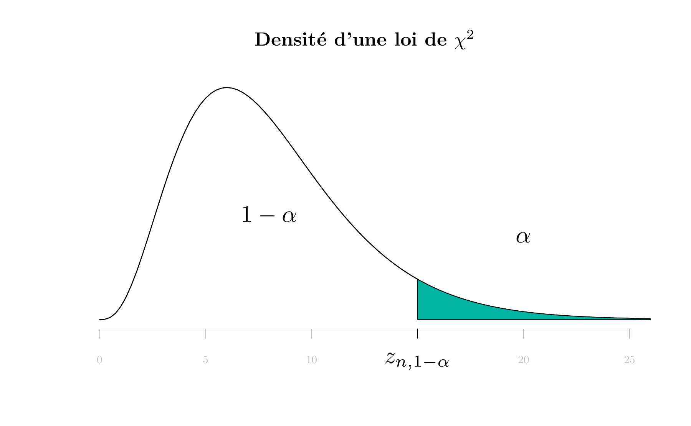

Vous êtes invités à annoter le contenu de ce cours. Les annotations peuvent être des corrections typographiques, des propositions ou des questions. Pour ajouter des annotations, choisissez le text que vous voulez commenter et cliquez sur . Pour accéder aux annotations crées par d'autres personnes, cliquez sur le coin supérieur de la page .
E Table de la loi de Khi-deux \(\chi^2\)
\(X\) étant une variable aléatoire de loi de \(\chi^2\) à \(n\) degrés de liberté et \(\alpha\) un réel de \([0,1]\), la table donne la valeur de \(z_{n,1-\alpha} = F_{\chi_n^2}^{-1}(1-\alpha)\) telle que \(P(X > z_{n,1-\alpha})=\alpha\). En , la commande correspondante est qchisq(1-alpha, n).
#ans> Error in loadNamespace(x): aucun package nommé 'shape' n'est trouvé
| \(n \backslash \alpha\) | 0.995 | 0.99 | 0.975 | 0.95 | 0.9 | 0.8 | 0.7 | 0.5 | 0.3 | 0.2 | 0.1 | 0.05 | 0.025 | 0.01 | 0.005 | 0.001 |
|---|---|---|---|---|---|---|---|---|---|---|---|---|---|---|---|---|
| 1 | 0.000 | 0.000 | 0.001 | 0.004 | 0.016 | 0.064 | 0.148 | 0.455 | 1.07 | 1.64 | 2.71 | 3.84 | 5.02 | 6.63 | 7.88 | 10.8 |
| 2 | 0.010 | 0.020 | 0.051 | 0.103 | 0.211 | 0.446 | 0.713 | 1.386 | 2.41 | 3.22 | 4.61 | 5.99 | 7.38 | 9.21 | 10.60 | 13.8 |
| 3 | 0.072 | 0.115 | 0.216 | 0.352 | 0.584 | 1.005 | 1.424 | 2.366 | 3.67 | 4.64 | 6.25 | 7.82 | 9.35 | 11.35 | 12.84 | 16.3 |
| 4 | 0.207 | 0.297 | 0.484 | 0.711 | 1.064 | 1.649 | 2.195 | 3.357 | 4.88 | 5.99 | 7.78 | 9.49 | 11.14 | 13.28 | 14.86 | 18.5 |
| 5 | 0.412 | 0.554 | 0.831 | 1.145 | 1.610 | 2.343 | 3.000 | 4.351 | 6.06 | 7.29 | 9.24 | 11.07 | 12.83 | 15.09 | 16.75 | 20.5 |
| 6 | 0.676 | 0.872 | 1.237 | 1.635 | 2.204 | 3.070 | 3.828 | 5.348 | 7.23 | 8.56 | 10.64 | 12.59 | 14.45 | 16.81 | 18.55 | 22.5 |
| 7 | 0.989 | 1.239 | 1.690 | 2.167 | 2.833 | 3.822 | 4.671 | 6.346 | 8.38 | 9.80 | 12.02 | 14.07 | 16.01 | 18.48 | 20.28 | 24.3 |
| 8 | 1.344 | 1.646 | 2.180 | 2.733 | 3.490 | 4.594 | 5.527 | 7.344 | 9.52 | 11.03 | 13.36 | 15.51 | 17.54 | 20.09 | 21.95 | 26.1 |
| 9 | 1.735 | 2.088 | 2.700 | 3.325 | 4.168 | 5.380 | 6.393 | 8.343 | 10.66 | 12.24 | 14.68 | 16.92 | 19.02 | 21.67 | 23.59 | 27.9 |
| 10 | 2.156 | 2.558 | 3.247 | 3.940 | 4.865 | 6.179 | 7.267 | 9.342 | 11.78 | 13.44 | 15.99 | 18.31 | 20.48 | 23.21 | 25.19 | 29.6 |
| 11 | 2.603 | 3.053 | 3.816 | 4.575 | 5.578 | 6.989 | 8.148 | 10.341 | 12.90 | 14.63 | 17.27 | 19.68 | 21.92 | 24.73 | 26.76 | 31.3 |
| 12 | 3.074 | 3.571 | 4.404 | 5.226 | 6.304 | 7.807 | 9.034 | 11.340 | 14.01 | 15.81 | 18.55 | 21.03 | 23.34 | 26.22 | 28.30 | 32.9 |
| 13 | 3.565 | 4.107 | 5.009 | 5.892 | 7.042 | 8.634 | 9.926 | 12.340 | 15.12 | 16.98 | 19.81 | 22.36 | 24.74 | 27.69 | 29.82 | 34.5 |
| 14 | 4.075 | 4.660 | 5.629 | 6.571 | 7.790 | 9.467 | 10.821 | 13.339 | 16.22 | 18.15 | 21.06 | 23.68 | 26.12 | 29.14 | 31.32 | 36.1 |
| 15 | 4.601 | 5.229 | 6.262 | 7.261 | 8.547 | 10.307 | 11.721 | 14.339 | 17.32 | 19.31 | 22.31 | 25.00 | 27.49 | 30.58 | 32.80 | 37.7 |
| 16 | 5.142 | 5.812 | 6.908 | 7.962 | 9.312 | 11.152 | 12.624 | 15.338 | 18.42 | 20.46 | 23.54 | 26.30 | 28.84 | 32.00 | 34.27 | 39.3 |
| 17 | 5.697 | 6.408 | 7.564 | 8.672 | 10.085 | 12.002 | 13.531 | 16.338 | 19.51 | 21.61 | 24.77 | 27.59 | 30.19 | 33.41 | 35.72 | 40.8 |
| 18 | 6.265 | 7.015 | 8.231 | 9.390 | 10.865 | 12.857 | 14.440 | 17.338 | 20.60 | 22.76 | 25.99 | 28.87 | 31.53 | 34.80 | 37.16 | 42.3 |
| 19 | 6.844 | 7.633 | 8.907 | 10.117 | 11.651 | 13.716 | 15.352 | 18.338 | 21.69 | 23.90 | 27.20 | 30.14 | 32.85 | 36.19 | 38.58 | 43.8 |
| 20 | 7.434 | 8.260 | 9.591 | 10.851 | 12.443 | 14.578 | 16.266 | 19.337 | 22.77 | 25.04 | 28.41 | 31.41 | 34.17 | 37.57 | 40.00 | 45.3 |
| 21 | 8.034 | 8.897 | 10.283 | 11.591 | 13.240 | 15.445 | 17.182 | 20.337 | 23.86 | 26.17 | 29.61 | 32.67 | 35.48 | 38.93 | 41.40 | 46.8 |
| 22 | 8.643 | 9.542 | 10.982 | 12.338 | 14.041 | 16.314 | 18.101 | 21.337 | 24.94 | 27.30 | 30.81 | 33.92 | 36.78 | 40.29 | 42.80 | 48.3 |
| 23 | 9.260 | 10.196 | 11.689 | 13.091 | 14.848 | 17.187 | 19.021 | 22.337 | 26.02 | 28.43 | 32.01 | 35.17 | 38.08 | 41.64 | 44.18 | 49.7 |
| 24 | 9.886 | 10.856 | 12.401 | 13.848 | 15.659 | 18.062 | 19.943 | 23.337 | 27.10 | 29.55 | 33.20 | 36.41 | 39.36 | 42.98 | 45.56 | 51.2 |
| 25 | 10.520 | 11.524 | 13.120 | 14.611 | 16.473 | 18.940 | 20.867 | 24.337 | 28.17 | 30.68 | 34.38 | 37.65 | 40.65 | 44.31 | 46.93 | 52.6 |
| 26 | 11.160 | 12.198 | 13.844 | 15.379 | 17.292 | 19.820 | 21.792 | 25.336 | 29.25 | 31.80 | 35.56 | 38.88 | 41.92 | 45.64 | 48.29 | 54.1 |
| 27 | 11.808 | 12.879 | 14.573 | 16.151 | 18.114 | 20.703 | 22.719 | 26.336 | 30.32 | 32.91 | 36.74 | 40.11 | 43.20 | 46.96 | 49.65 | 55.5 |
| 28 | 12.461 | 13.565 | 15.308 | 16.928 | 18.939 | 21.588 | 23.647 | 27.336 | 31.39 | 34.03 | 37.92 | 41.34 | 44.46 | 48.28 | 50.99 | 56.9 |
| 29 | 13.121 | 14.256 | 16.047 | 17.708 | 19.768 | 22.475 | 24.577 | 28.336 | 32.46 | 35.14 | 39.09 | 42.56 | 45.72 | 49.59 | 52.34 | 58.3 |
| 30 | 13.787 | 14.953 | 16.791 | 18.493 | 20.599 | 23.364 | 25.508 | 29.336 | 33.53 | 36.25 | 40.26 | 43.77 | 46.98 | 50.89 | 53.67 | 59.7 |
| 31 | 14.458 | 15.655 | 17.539 | 19.281 | 21.434 | 24.255 | 26.440 | 30.336 | 34.60 | 37.36 | 41.42 | 44.98 | 48.23 | 52.19 | 55.00 | 61.1 |
| 32 | 15.134 | 16.362 | 18.291 | 20.072 | 22.271 | 25.148 | 27.373 | 31.336 | 35.66 | 38.47 | 42.59 | 46.19 | 49.48 | 53.49 | 56.33 | 62.5 |
| 33 | 15.815 | 17.074 | 19.047 | 20.867 | 23.110 | 26.042 | 28.307 | 32.336 | 36.73 | 39.57 | 43.74 | 47.40 | 50.73 | 54.78 | 57.65 | 63.9 |
| 34 | 16.501 | 17.789 | 19.806 | 21.664 | 23.952 | 26.938 | 29.242 | 33.336 | 37.80 | 40.68 | 44.90 | 48.60 | 51.97 | 56.06 | 58.96 | 65.2 |
| 35 | 17.192 | 18.509 | 20.569 | 22.465 | 24.797 | 27.836 | 30.178 | 34.336 | 38.86 | 41.78 | 46.06 | 49.80 | 53.20 | 57.34 | 60.27 | 66.6 |
| 36 | 17.887 | 19.233 | 21.336 | 23.269 | 25.643 | 28.735 | 31.115 | 35.336 | 39.92 | 42.88 | 47.21 | 51.00 | 54.44 | 58.62 | 61.58 | 68.0 |
| 37 | 18.586 | 19.960 | 22.106 | 24.075 | 26.492 | 29.635 | 32.053 | 36.336 | 40.98 | 43.98 | 48.36 | 52.19 | 55.67 | 59.89 | 62.88 | 69.3 |
| 38 | 19.289 | 20.691 | 22.878 | 24.884 | 27.343 | 30.537 | 32.992 | 37.335 | 42.05 | 45.08 | 49.51 | 53.38 | 56.90 | 61.16 | 64.18 | 70.7 |
| 39 | 19.996 | 21.426 | 23.654 | 25.695 | 28.196 | 31.441 | 33.932 | 38.335 | 43.10 | 46.17 | 50.66 | 54.57 | 58.12 | 62.43 | 65.48 | 72.1 |
| 40 | 20.707 | 22.164 | 24.433 | 26.509 | 29.051 | 32.345 | 34.872 | 39.335 | 44.16 | 47.27 | 51.80 | 55.76 | 59.34 | 63.69 | 66.77 | 73.4 |
| 41 | 21.421 | 22.906 | 25.215 | 27.326 | 29.907 | 33.251 | 35.813 | 40.335 | 45.22 | 48.36 | 52.95 | 56.94 | 60.56 | 64.95 | 68.05 | 74.7 |
| 42 | 22.138 | 23.650 | 25.999 | 28.144 | 30.765 | 34.157 | 36.755 | 41.335 | 46.28 | 49.46 | 54.09 | 58.12 | 61.78 | 66.21 | 69.34 | 76.1 |
| 43 | 22.859 | 24.398 | 26.785 | 28.965 | 31.625 | 35.065 | 37.698 | 42.335 | 47.34 | 50.55 | 55.23 | 59.30 | 62.99 | 67.46 | 70.62 | 77.4 |
| 44 | 23.584 | 25.148 | 27.575 | 29.787 | 32.487 | 35.974 | 38.641 | 43.335 | 48.40 | 51.64 | 56.37 | 60.48 | 64.20 | 68.71 | 71.89 | 78.8 |
| 45 | 24.311 | 25.901 | 28.366 | 30.612 | 33.350 | 36.884 | 39.585 | 44.335 | 49.45 | 52.73 | 57.51 | 61.66 | 65.41 | 69.96 | 73.17 | 80.1 |
| 46 | 25.041 | 26.657 | 29.160 | 31.439 | 34.215 | 37.795 | 40.529 | 45.335 | 50.51 | 53.82 | 58.64 | 62.83 | 66.62 | 71.20 | 74.44 | 81.4 |
| 47 | 25.775 | 27.416 | 29.956 | 32.268 | 35.081 | 38.708 | 41.474 | 46.335 | 51.56 | 54.91 | 59.77 | 64.00 | 67.82 | 72.44 | 75.70 | 82.7 |
| 48 | 26.511 | 28.177 | 30.755 | 33.098 | 35.949 | 39.621 | 42.420 | 47.335 | 52.62 | 55.99 | 60.91 | 65.17 | 69.02 | 73.68 | 76.97 | 84.0 |
| 49 | 27.249 | 28.941 | 31.555 | 33.930 | 36.818 | 40.534 | 43.366 | 48.335 | 53.67 | 57.08 | 62.04 | 66.34 | 70.22 | 74.92 | 78.23 | 85.4 |
| 50 | 27.991 | 29.707 | 32.357 | 34.764 | 37.689 | 41.449 | 44.313 | 49.335 | 54.72 | 58.16 | 63.17 | 67.50 | 71.42 | 76.15 | 79.49 | 86.7 |